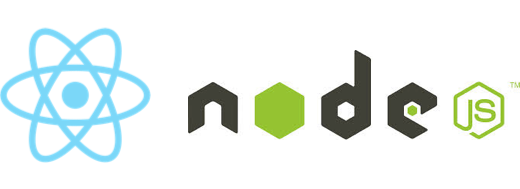

let's start with why...
Before I ever even thought about code I was fascinated with technology. I always wondered how it worked. I can remember one my earliest memories sitting there looking inside of the slot on my nintendo 64 wondering how in the world the characters in the game could fit through such a tiny space. Of course now I realize they never had too but it is this kind of curiosity with a few other personality traits that attrected me so strongly to the world of programming.
I was always a very technical person. from the age of 12 I was ripping the carberautors out of my dirt bikes and trying to open the jets up. I read some documentaition and learned that more gasoline meant higher combustion which in turn meant faster speeds. The jets on the carberauter is what controlled that precious flow of gasoline. so I bought a dyno jet kit with some birthday money and went to work.
after days od hard work I got the carbs put back together and in the bike. there was a problem ... the bike would just sputter and die out at idle. th eproblem that I dont know at the time is yes more gasoline can me more combustion but only if you add more air. with out the air the bike just runs rich and the gasoline is too wet drowing out my spark plugs. that bike sat for weeks until my friends dad got me some new (much bigger) ait filters.
you might be wondering why I have told that story . thats because in 2019 virtually evrything in a dirtbike is run by computer. instead of carbs we have injector. and we also have ram air systems. so instead hours rebuilding the carbs , stripping down most of the bike and putting it all back together only too hope you dont have to do it all over again to adjust something you can now plug that bike into a computer and tell it exactly how you want it to run.
the idea of a computer program saving me that much time and effort is truly just amazing. I mean days of hard, and dirty work abstracted into a few minute and a couple clicks.I would constantly run into situations like this where programs could take something daunting and difficult and turn it into a mundane and simple task.
after four years serving my country as a combat medic in the military I was looking for a new career feild. I had always been so passionate about technolgy in general but i knew by this point i wanted to be the person that wrote these programs. but how? would I need to spend another fours years getting a degree ?
the beggining
My original plan was simple. spend the next 3 months learning to code myself and make sure it was something i really loved to do, and if it was i would start applying to schools in the spring . I got all of my cirriculum from youtube and codeacademy and spent all the left over time just reading and watching videos to get an idea of what area of programming i really wanted to get into. and this is exactly what I did.
I started off with the easy stuff. HTML5 was my first language and then i learned to style my mark up with css. I really couldn't belwive how quickly I was able to learn it and build fully built landing pages. It wasnt long before I was learning javascript and some python as well at this point it seemed I was following the general consensus of the developers I followed on youtube and several other platforms whuch was html css and then Jacascript. Python was just becasue it looked like so much fun !

Somewhere arounf month 2 I decided I didnt need a four your comp sci degree. I had already learned so much and It seemed like most of the feedback i was getting really agreed with this. so around month 3 1/2 I was able to land a very low paid internship for the coorperate office of a nutritional supplements company I had already been working for. I was extremly lucky To have gottenthis position and while I didnt learn alot of code a learned alot of related knowledge and workflow processess like completing tickets, having stand-up meetings, and using Git/GitHub.
My main Duties for this internship were taking existing code and bringing it up to standards with acessibility and changing company policy. I laso made minor tweaks to existing styling on some sites and ran Audits on performance. while I was so greatful to my boss for giving me the internship I was slightly disappointed i =n feeling that i wasnt really learning any code and i felt i wasnt progressing nearly as much as whgen i was just learning new things all day
aroun month five of my intrnship i was hearing alot about these things called coding bootcamps. they claimed to give you all the knowledge you needed to land a reel programming job in only 3 months. WOW!! could this be true . after alot of research I seemed very unsure. many sites and forunms warned against it saying they preyed on people who thought they could get six figure salaries in just 3 months. but this didnt apply too me becasue i didnt care about the monmey i just really wanted to get better at something I loved to do !
after weeks of thinking on it I decided to do it. I was going to go get a loan from the bank quit my job and do nothing but the bootcamp . the one I chose is hack reactor. I chose them becasue i wanted to go in person and they had a location right in my city. it was a 3 month fulltime course , and even though many people were warning me about it I decided to take a chance.
2 weeks prior to me officially starting the bootcamp I was doing my normal afternoon study routine. I was watching my favorite channel called funfun function when an add for lambda school came on . I was instantly intrigued by everything they said. I little bit of diiging and i decided this was everything i wanted and needed.
instead of a 12 week bootcamp this was more like a 9 month + accelerated computer science course. even after the 9 months of fulltime class you could take 4 more complete cirriculum tracks for free! also it was full stack and I found out they were teaching cutting edge technologies like React and node.js. I really loved what the CEO Austen was all about and applied that same day. I didnt read any forumns, I dint reach out to anyone. it just felt so right and i knew it was something i had to do

About a week later i was interviewed and excepted. I then called the bank and hack reactor and was able to get a full refund of my money. Lambda had about 20 hours in preclasses I had to take before day 1 to be able to start and my cohort started in 2 weeks. it was would about 10 hours everyday for the nest 9 months and I was so excited for the oppurtunity and the commitment
the middle
my experience with Lambda was everything I knew it would be. The first 4 months of the cirriculum was absalutly brutal. the first months was topics that i already thought i knew well. things like html and css. Lambda showed me how much room for improvment there really was. They didnt just teach me the code. they taught me the skill. they taught me the history and culture. they didnt tell me what to think and thats what i feel many of these bootcamps do. they just force feed you the syntax until you can spit it back in a program. instead lambda teached you how to think . how to find the answers and slove a problem even if you have never seen how to do it before
I couldn't be more apreciative for what lambda did for me. I got connected with many like minded students who felt exactly how I did you would stay up late and program with me or we would spend a whole weekend building hobby projects. it did so much for my development and social skills and gave me an edge I really dont think I could of getten anywwhere else.
the next three months are React and Node.js. It was just like the first month but for me it was much harder since I had no experience with these technologies. but lambda just kepts teaching me how to think , and how to utilize the right resources and quickly cypher through loads of documentation to get what I needed. they were always therre to support me but also showed me how to be independent and use my skills to find solutions
after the base cirriculum there is 5 more months where you do a major capstone project with a hiring partner and an 8 week python part the cover moretechnical computer science stuff like hash tables, algorithms, and optimization. Things that I would never have gooten anywhere else with out a college degree.
Now...
So once I completed my base cirriculum I applied for and got a 4 month contract postion with the school as a team lead. helping assist the school with several admin duties and also tutoring a team of around 10 students and showing them all the things lambda showed me my first time Around
I still dont have my dream full time 80k developer job , but I felt i could write this blog. the blog is titles how i learned to code and for the first time i can say. I Know How to code. While the learning never ever stops I feel im at a place where I feel comfterble calling my self a developer. not just comfterble , but ecstatic. Its been such a long jpourney to get here and I know the grind is far from over but I wanted to share with you how i learned to code.